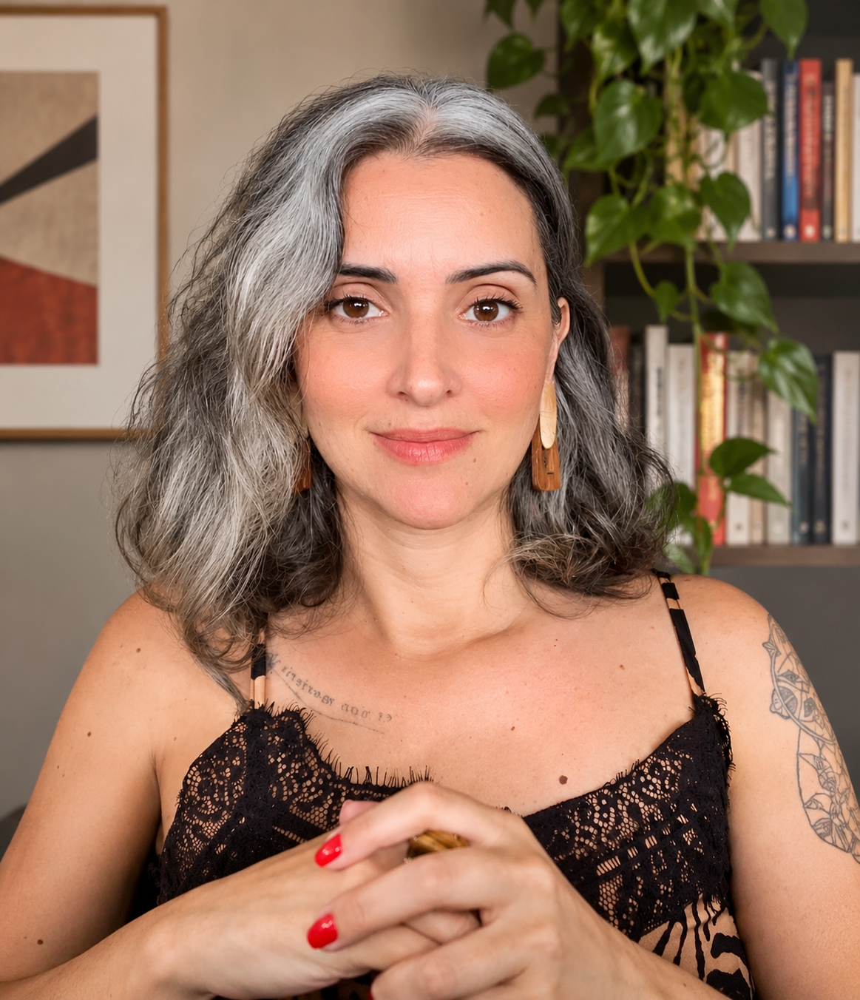

Podemos analisar
- Comunicação no Instagram e seus objetivos comerciais
- Links da bio e caminhos de contato
- Linha editorial e calendário existentes
- Apresentação de obras, projetos e serviços
- Captação e atendimento de interessados
Uma sessão para examinar como você apresenta seu trabalho, recebe interessados e conduz oportunidades comerciais.
Conhecer a Reversa90 minutos online + relatório com orientações essenciais de ajuste.
Assista à apresentação da Reversa.
O que você já construiu merece ser observado antes de ser alterado.
Seu Instagram, portfólio, site e conversas com clientes podem funcionar isoladamente. A questão é entender como essas partes se relacionam.
Revisitar. Rever. Reordenar. Recomeçar.Observar o que já existe.
Reconhecer o que funciona.
Identificar ajustes e prioridades.
Seguir a partir da experiência acumulada.
A Reversa identifica oportunidades e orienta decisões. A construção de novas estratégias e a execução são trabalhos separados.
Para desenvolvimento estratégico aprofundado, existe a ECOS. Implementações técnicas podem ser contratadas à parte.

Sou consultora de marketing, com MBA em Marketing e Branding e mais de dez anos de experiência no mercado criativo.
Desde 2021, trabalho com profissionais e negócios autorais, analisando como apresentam seu trabalho, atraem interessados e transformam essas aproximações em oportunidades comerciais.
Tenho um olhar especialmente atento às conexões entre comunicação, posicionamento e processos de captação. Gosto de investigar o que está acontecendo antes de recomendar o que precisa mudar.
Foi desse modo de trabalhar que nasceu a Reversa.
Análise individual, experiência prática e orientações possíveis para a sua realidade.
Uma análise individual de como você divulga, apresenta e comercializa seu trabalho. Você recebe orientações sobre o que manter, corrigir e priorizar.
Para profissionais criativos das artes visuais e serviços personalizados. A sessão não inclui implementação nem acompanhamento contínuo.
Você compartilha os canais e materiais necessários para contextualizar a análise.
Durante 90 minutos, examinamos o processo existente e discutimos pontos de atenção.
Você recebe um relatório com orientações essenciais de ajuste e prioridades.
Não. A análise considera os canais que você já utiliza, incluindo redes sociais e WhatsApp.
Não. A Reversa oferece análise e orientações. A implementação pode ser contratada separadamente.
Em formato digital, após a sessão. O prazo de entrega será informado na confirmação da contratação.
Para profissionais criativos das artes visuais e serviços personalizados que desejam revisar como divulgam, apresentam e comercializam seu trabalho.
Uma sessão individual de 90 minutos, com orientações essenciais para revisar seu processo comercial.
Conhecer a oferta